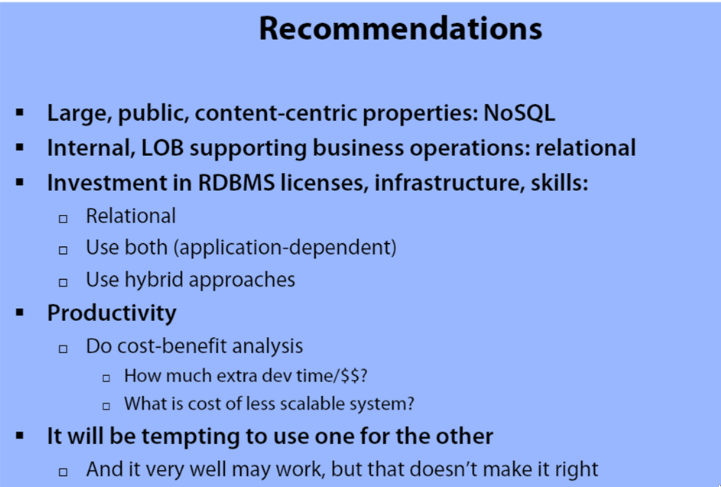

Samenvatting theorie - Big Data, NoSQL en relationele databases
Home > Samenvatting theorie
View org source
Table of Contents
Terminologie
Een database is een digitaal opgeslagen archief. Het woord database wordt voor verschillende begrippen gebruikt:
- Opgeslagen gegevens als zodanig (bedoelt men de eigenlijke data zelf mee);
- Wijze waarop gegevens zijn opgeslagen (datamodel);
- Software waarmee databases kunnen worden aangemaakt en benaderd (databasemanagementsysteem).
Een datawarehouse is een gegevensverzameling die in een zodanige vorm gebracht is dat terugkerende en ad‐hoc vragen in relatief korte tijd beantwoord kunnen worden (Data die omgezet is naar informatie).
Datamining is het op basis van relevante gegevens gericht zoeken naar (statistische) verbanden in gegevensverzamelingen met als doel profielen op te stellen voor wetenschappelijk, journalistiek of commercieel gebruik.
Big Data
Big Data is een hype geworden door:
- Hedendaagse hardwaremogelijkheden, waaronder goedkopere servers;
- Goedkopere en ruimere opslag;
- Mogelijkheden van open-source software;
- Beschikbaarheid van massa's gegevens.
Toepassingen van Big Data:
- Marketing (bijvoorbeeld persoonlijke data voor persoonsgerichte reclame);
- Politieonderzoek en -opsporing (bijvoorbeeld cybercrime opsporing);
- Analyse bij grote datalekken;
- Onderzoek in de gezondheidssector (bijvoorbeeld ziektes en erfelijkheid);
- In de industrie (bijvoorbeeld om technologie te verbeteren zoals de veiligheid in auto's).
Wanneer spreken we van Big Data?
- Honderde terabytes;
- Een "klassieke" databank kan de complexiteit niet meer aan. Een alternatief is nodig voor de niet-relationele gegevens;
- De 3 V's kunnen aanleiding geven tot het spreken over Big Data:
- Volume - een grote hoeveelheid gegevens, teveel voor om te verwerken op een traditionele manier;
- Velocity - een hoge snelheid van datatoevoer en een hoge verwerkingssnelheid;
- Variety - de structuur van de gegevens ligt niet vast zoals bij een relationele databank.
- Soms spreekt men over 4 of 5 V's
- Veracity - betrouwbaarheid van de gegevens;
- Value - de info die gegenereerd wordt moet waardevol zijn.
- Er is nood aan het opdelen van de data in kleinere eenheden.
Gedistribueerde systemen
Een gedistribueerd computersysteem bestaat uit verschillende computers en softwarecomponenten die via een netwerk (lokaal LAN of worldwide WAN) communiceren.
Voordelen distributed systeem:
- Reliability - als één of meer nodes crashen dan kunnen de andere blijven verder werken;
- Scalability - uitbereiden is altijd mogelijk;
- Sharing resources - meerdere applicaties kunnen gebruik maken van dezelfde gegevens;
- Flexibility - eenvoudig nieuwe services te installeren, te implementeren en te debuggen;
- Speed - meer power en snelheid;
- Open system - elke gebruiker kan beschikken over elke service indien voldoende rechten;
- Performance - hogere performantie is mogelijk doordat de taken verdeeld kunnen worden over verschillende nodes.
Nadelen distributed systeem:
- Minder software support;
- Netwerkproblemen;
- Beveiligingsproblemen.
CAP-stelling
- Consistency - mate waarin het DB-systeem de meeste recente gegevens aan alle nodes/servers laat zien;
- Availability - mate waarin het DB-systeem beschikbaar is;
- Partition tolerance - mate waarin het DB-systeem blijft functioneren wanneer één of meerdere nodes uitvallen.

Figure 1: CAP-stelling
Database principes
ACID - voor relationele databases
- Atomic - elke transactie slaagt volledig of niet;
- Consistent - (LET OP, is niet hetzelfde als bij CAP) gegevens mogen niet tegenstrijdig worden;
- Isolated - elke transactie wordt los van een andere transactie uitgevoerd;
- Durable - Als een transactie voltooid is, dan is deze permanent onomkeerbaar.
BASE - voor NoSQL databases
- Basic Availability - systeem garandeert availability;
- Soft state - Het systeem kan in de tijd wijzigen, zelfs zonder input van data;
- Eventual consistency - na verloop van tijd zal de databank consistent zijn. Eventual betekent uiteindelijk, niet misschien.
RDBMS vs NoSQL
| RDBMS | NoSQL |
|---|---|
| Gestructureerde data | Not Only SQL - ook ongestructureerde data |
| SQL - structured query language | Geen standaard query language |
| Data en relaties worden in aparte tabellen opgeslagen | Geen vooraf gedefinieerde structuur |
| DML - data manipulation language, DDL - data definition language | Soms onvoorspelbare data |
| Altijd consistent | Eventual consistent maar wel hoge performantie |
| ACID-transacties | BASE-transacties |
| Voordelen NoSQL | Nadelen NoSQL |
|---|---|
| Hoge scalability | Geen standaard |
| Distributed computing | Beperkte query mogelijkheden |
| Lagere kost | Eventual consistency is moeilijk programmeerbaar |
| Flexibiliteit in structuur van data | |
| Geen ingewikkelde relaties/joins |
Soorten NoSQL datamodelen
- Key-value (meest gebruikt, je kan enkel zoeken via key)
- Column (niet hetzelfde als relationele database)
- Document
- Graph
Zie cursus voor meer info (afbeeldingen en uitleg).
Contributions zijn welkom, indien iemand deze foto's wel
graag hier heeft.
Wanneer wat gebruiken?

Figure 2: NoSQL or SQL recommendations
Home > Samenvatting theorie